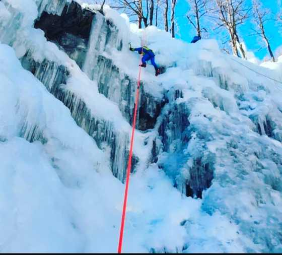
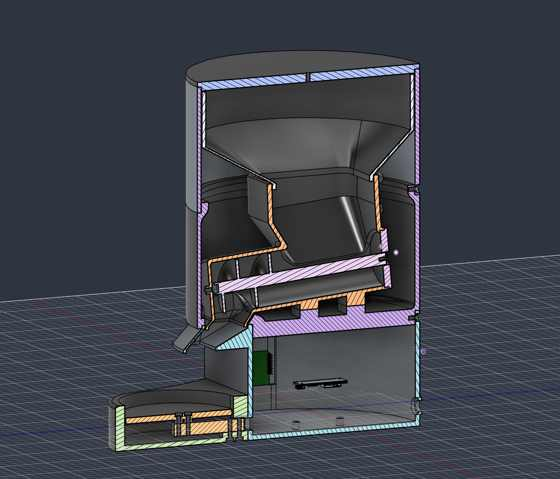
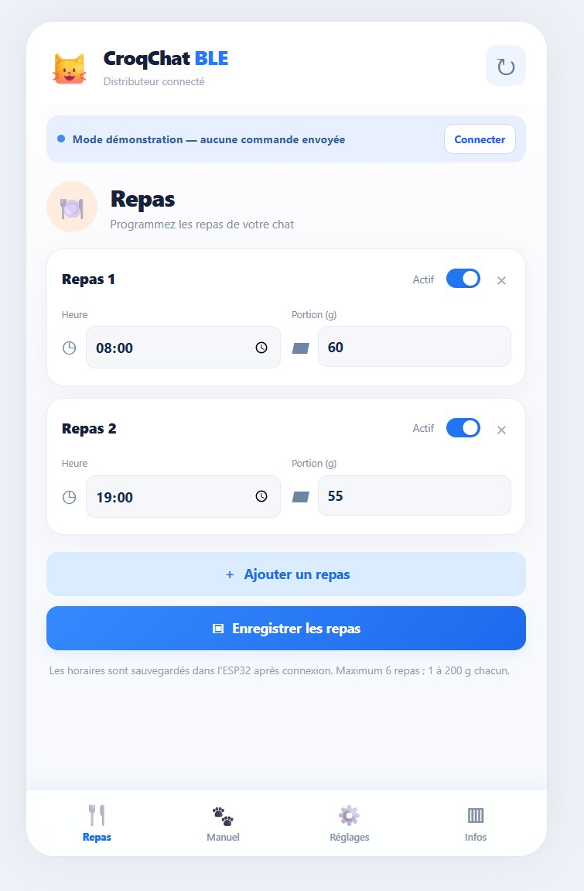
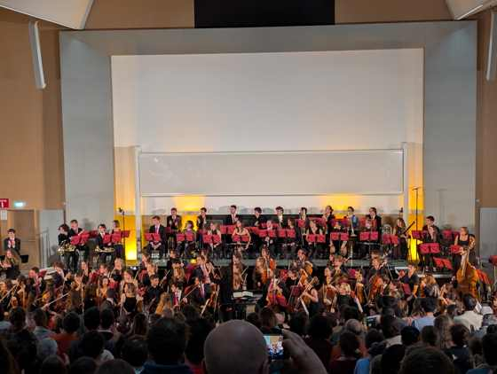

How I work
I like understanding how things work and finding out why they sometimes fail. I try to approach problems by testing one possible cause at a time.
ENGINEERING PORTFOLIO · TOULOUSE, FRANCE
Electrical Engineering Student
Work-study apprentice · Ascent Integration
I study electrical engineering at Toulouse INP–ENSEEIHT and work as an automation apprentice at Ascent Integration. My previous apprenticeship in R&D taught me how to measure and analyse; my current role lets me apply those skills to PLCs, operator interfaces and industrial equipment.
My goal: to become a skilled automation engineer and, with experience, move into project management in the aerospace industry.
Explore my experience →01 / ABOUT ME
My background in Physical Measurements taught me how to analyse and test ideas. Today, at ENSEEIHT and Ascent Integration, I apply that approach to industrial automation and electrical engineering.
I like understanding how things work and finding out why they sometimes fail. I try to approach problems by testing one possible cause at a time.
I want to develop strong technical skills before gradually taking on more responsibility in industrial automation projects.
I support Gr’INP as a climbing instructor and treasurer and contribute to student life through CAN 7.
BEYOND ENGINEERING
Climbing has been part of my life for years. I also enjoy mountaineering, ice climbing and mountain biking. They give me opportunities to keep learning, challenge myself and spend time outdoors.


02 / PROFESSIONAL EXPERIENCE
My two apprenticeships have given me very different experiences: laboratory research at ALTEO and industrial automation at Ascent Integration. Both have helped me learn to work independently, ask the right questions and test my ideas.
I work on automation systems for industrial equipment used in the aerospace sector. My tasks include PLC programming, HMI development, working with motor drives and helping with testing and commissioning.
During my BUT in Physical Measurements, I investigated the rheological properties of alumina powders in an industrial research laboratory.
03 / ENGINEERING PROJECTS
I enjoy projects where electronics, software and mechanical design have to work together. They have helped me improve my programming, design and problem-solving skills.

PERSONAL PROJECT · EMBEDDED SYSTEMS & CAD
I am developing a connected cat food dispenser combining an ESP32, RFID identification, a motor, a weighing system and a custom housing designed in Fusion.
Structuring the program into function blocks (FBs) was particularly challenging. When we encountered problems, we had to step back, reconsider our approach and identify the cause before finding a solution.
I improved my structured programming, problem-solving and CAD skills. I also learned how to integrate electronics into a mechanical design while considering the product as a whole.
ESP32 · RFID · Function blocks · Fusion CAD · Electronics integration
APPLICATION · USER INTERFACE
I created a companion application to make the dispenser easy to use. It allows users to plan meals, set feeding times and portions, enable or disable schedules and access manual feeding controls.
Presenting the main functions without making the interface complicated. The user should be able to understand and configure the dispenser in a few steps.
This project helped me design a clearer and more user-friendly interface. It connects directly to the HMI screens I develop at Ascent Integration: in both cases, the goal is to make a technical system intuitive for the person using it.
CroqChat BLE · Meal scheduling · Interface design · User experience

ASCENT INTEGRATION · COMMISSIONING
I joined an on-site commissioning team for an industrial access system associated with Airbus A350 production.
Working on a real installation rather than a test bench, with the need to communicate clearly and respond to unexpected issues.
First-hand experience of commissioning, greater confidence on site and a better understanding of how engineering work is delivered.
ASCENT INTEGRATION · HMI
I work on Siemens HMI screens and reusable interface components linked to PLC applications.
Making information clear for operators while keeping the application consistent and maintainable.
More confidence in TIA Portal and a better understanding of how interface design affects daily operations.
ELECTRICAL ENGINEERING
Through coursework and industrial work, I study electrical machines, power converters and Siemens S210 and G120C drives.
Connecting mathematical models and control concepts to measurements and actual motor behaviour.
A more systematic approach to testing and a stronger understanding of electrical-machine control.
ALTEO R&D · EXPERIMENTAL RESEARCH
I carried out laboratory measurements and investigated rheological behaviour during my apprenticeship at ALTEO R&D.
Identifying which parameters affected the results and designing meaningful experiments.
Rigour in measurement, data interpretation and technical reporting that I still use today.
PERSONAL IT PROJECT
I have set up a network-attached storage server at home. I plan to add its interface and technical details to this portfolio.
Personal infrastructure · Storage · Networking
04 / CIVIC ENGAGEMENT
Being part of student associations is a way for me to help others and contribute to activities I enjoy.
GR’INP · CLIMBING
I first became a climbing instructor to help the club and share the sport with other students. I later became treasurer because I wanted to do more to support the club's activities.
I now help with financial tracking and membership fees as well as climbing sessions.
What I have learned: how much an association relies on people taking responsibility and supporting one another.
CAN 7 · STUDENT EVENTS
I am also involved in CAN 7, the school's student entertainment club, and take part in events such as student concerts.
What it has brought me: opportunities to meet people from different backgrounds and contribute outside my engineering studies.

05 / SKILLS
My skills come from a combination of engineering coursework, laboratory work and industrial projects. I am still learning, but I have already had the chance to apply several of these tools in practice.
Siemens TIA Portal · SCL and LAD · ET200SP PLCs · HMI development · Profinet · Industrial troubleshooting
Electrical machines · Power electronics · Motor drives · Instrumentation · Feedback control
C/C++ · Python · Microcontrollers · ESP32 · RFID · Sensors and measurement chains
Testing and validation · Design of experiments · Technical documentation · V-model principles · Teamwork
06 / CAREER & EVOLUTION PLAN
I want to build a strong technical foundation before moving towards project management. My goal is to understand the systems I will one day be responsible for coordinating.
My first apprenticeship taught me to be methodical, work with measurements and explain technical results.
I am developing my PLC and HMI skills, taking part in testing and commissioning, and learning how a project moves from requirements to a working installation.
A semester in Montréal would let me study control systems from another perspective, practise English and learn to adapt to a new environment.
I would like to contribute to more complex automation projects before gradually moving into coordination and project management in aerospace.
07 / INTERNATIONAL MOBILITY
For my S9 exchange, my first choice is Concordia University. I want to focus on advanced automatic control and electrical machines, combining the theory behind control systems with practical applications in industry.
My apprenticeship at Ascent Integration has given me hands-on experience with Siemens PLCs, HMI development, motor drives and commissioning. I now want to explore these subjects at master’s level, particularly real-time control, discrete-event systems and the control of electric drives. Studying abroad would also help me work more confidently in English and develop greater independence.
My preferred course selection combines advanced control with electrical-machine modelling and motor-drive control.
A practical programme combining advanced control techniques and electric drives.
An option focused on advanced digital and industrial process control.
MY MOBILITY PROJECT · FR / EN
These documents explain how the courses I have chosen fit my current apprenticeship and my plans to work in aerospace automation.
My motivations for studying at Concordia and how this semester would complement my professional and personal experience.
The specific graduate courses I want to follow in control engineering and electrical machines.
08 / CONTACT
Interested in discussing industrial automation, electrical engineering or a potential project? Feel free to contact me.
For professional enquiries, projects or opportunities.
roch.berquieres@etu.toulouse-inp.fr Write an emailSee my background, professional experience and updates.
Roch Berquieres · LinkedIn View my profile09 / CURRICULUM VITAE
My original CV is available in French and English. Both versions show only my city and postcode: 31500 Toulouse.
Formation en génie électrique, expériences chez Ascent Integration et ALTEO R&D et compétences techniques.
Ouvrir / Télécharger le CV français ↗My education, work-study experience in automation and electrical engineering skills.
Open / Download English résumé ↗